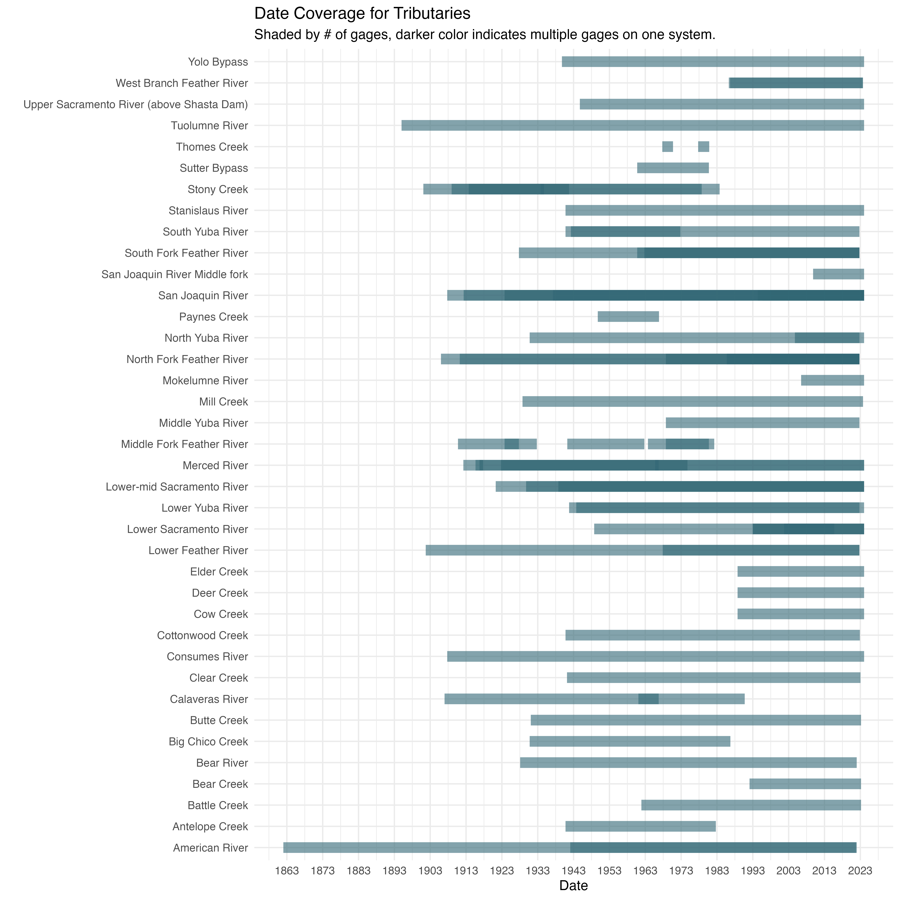
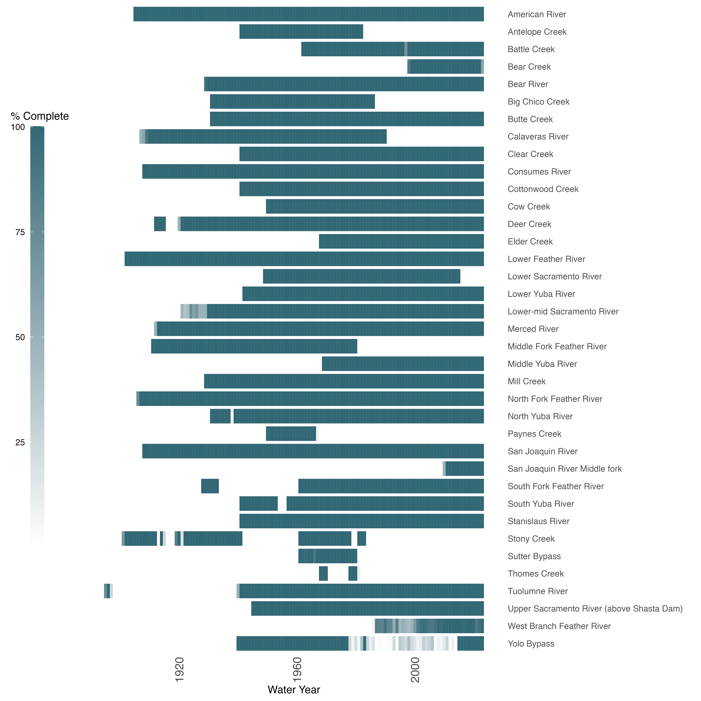

usgs_template.RmdThe United States Geological Survey (USGS) is responsible for monitoring and providing information on the quantity, quality, distribution, movement, and other characteristics of surface water and groundwater resources across the United States. Among the data they collect and track is flow data. The NWIS Mapper provides an interface for users to explore and retrieve water data through interactive maps.
Source: National Water Information System (NWIS) mapper is a tool provided by the USGS. USGS NWIS website
Accessibility: Public, open and accessible online.
Coverage: Approximately 1.9 million sites in all 50 States, the District of Columbia, Puerto Rico, the Virgin Islands, Guam, American Samoa and the Commonwealth of the Northern Mariana Islands. Approximately 1,000 gages operate and report data publicly in California. Of these, about 60 percent are operated by the USGS, and the remaining gages are operated by State or other agencies. Lastly, a substantial number of gages are operated by third-party entities that are either not publicly availiable, or lack sufficient data quality to be reported. Source: California Stream Gaging Prioritization Plan 2022
Temporal Coverage: Temporal coverage of 1862 to present, however it varies across the different gages. Some gages have big data gaps or no historical data at all. Overall, it does not provide good temporal and system coverage.
Spatial Coverage: There is at least one gage with flow data for each of the streams of interest mentioned on Lindley et al.
Maintenance: Frequency of data collection varies depending on the site and the importance of the data for water resource management, flood monitoring, and other purposes. The frequency of data collection at a particular stream gage ranges from hourly to daily, and in some cases, data is collected more frequently (during specific events, such as storms or floods). Real-time data from many stream gages is available on the USGS NWIS website. The USGS continually updates and maintains its network of monitoring sites, data is available to the public through the NWIS platform.
Contact: General contact for Water Data for NWIS can be done through a “questions/comments” portal
Utilized By: Data is used for various FlowWest projects, including SR JPE.
The following section assesses spatial and temporal coverage of the stations.
The following chart summarizes the ranges of data availability. This is based on the published start and end dates and does not account for NA values within these ranges. Darker shading indicates that there are multiple gages operating at the same time.
## Rows: 77 Columns: 5
## ── Column specification ────────────────────────────────────────────────────────
## Delimiter: ","
## chr (4): Tributary, Gage, Min Date, Max Date
## lgl (1): Percent NA (only something we want to do if we can functionalize th...
##
## ℹ Use `spec()` to retrieve the full column specification for this data.
## ℹ Specify the column types or set `show_col_types = FALSE` to quiet this message.
The map below shows USGS gage locations
## Simple feature collection with 77 features and 43 fields
## Geometry type: POINT
## Dimension: XY
## Bounding box: xmin: -123.6439 ymin: 36.98439 xmax: -119.0864 ymax: 40.93959
## Geodetic CRS: WGS 84
## # A tibble: 77 × 44
## tributary gage min_date max_date agency_cd station_nm site_tp_cd lat_va
## * <chr> <chr> <date> <date> <chr> <chr> <chr> <dbl>
## 1 American … 1144… 1862-01-10 2021-12-30 USGS AMERICAN … ST 383808
## 2 American … 1142… 1942-01-27 2021-10-25 USGS NF AMERIC… ST 385610
## 3 Antelope … 1137… 1940-10-01 1982-09-09 USGS ANTELOPE … ST 401214
## 4 Battle Cr… 1137… 1961-12-01 2023-03-14 USGS BATTLE C … ST 402354
## 5 Bear Creek 1145… 1992-02-02 2023-03-14 USGS BEAR C AB… ST 385728
## 6 Bear River 1142… 1928-02-04 2021-12-27 USGS BEAR R NR… ST 390001
## 7 Butte Cre… 1139… 1931-01-23 2023-03-14 USGS BUTTE C N… ST 394334
## 8 Big Chico… 1138… 1930-10-01 1986-09-30 USGS BIG CHICO… ST 394635
## 9 Calaveras… 1130… 1961-02-01 1990-09-30 USGS CALAVERAS… ST 380853
## 10 Calaveras… 1130… 1907-01-01 1966-09-29 USGS CALAVERAS… ST 380520
## # ℹ 67 more rows
## # ℹ 36 more variables: long_va <dbl>, coord_meth_cd <chr>, coord_acy_cd <chr>,
## # coord_datum_cd <chr>, dec_coord_datum_cd <chr>, district_cd <chr>,
## # state_cd <chr>, county_cd <chr>, country_cd <chr>, land_net_ds <chr>,
## # map_nm <chr>, map_scale_fc <chr>, alt_va <dbl>, alt_meth_cd <chr>,
## # alt_acy_va <dbl>, alt_datum_cd <chr>, huc_cd <chr>, basin_cd <chr>,
## # topo_cd <chr>, instruments_cd <chr>, construction_dt <lgl>, …
The USGS QA/QC process commences with automated electronic processing software designed to detect errors or inconsistencies. Once identified, USGS staff conduct thorough reviews and implement necessary changes. For stream flow and other surface-water gauging stations, QA/QC documentation is reported in an annual station analysis report.